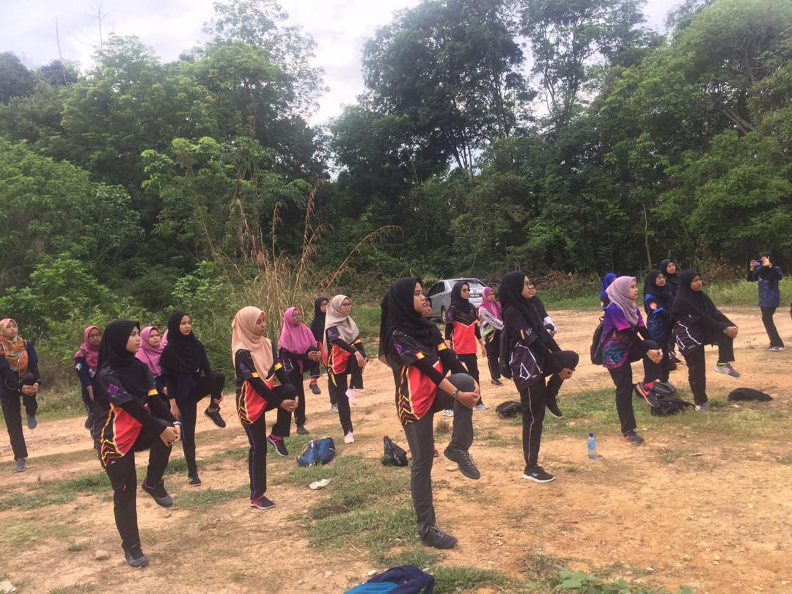
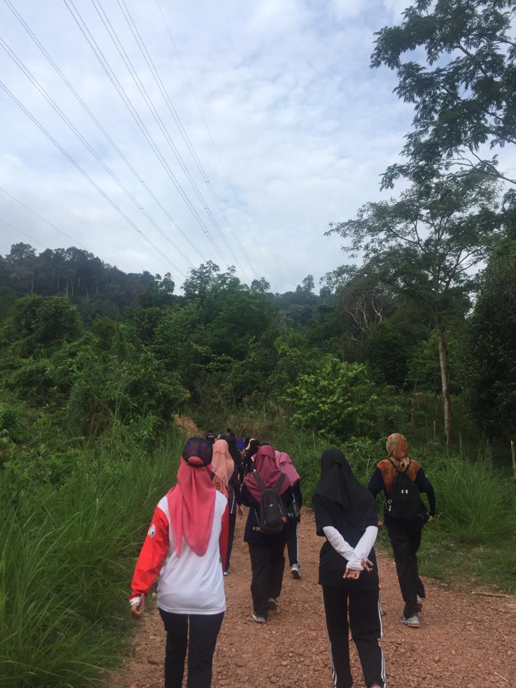
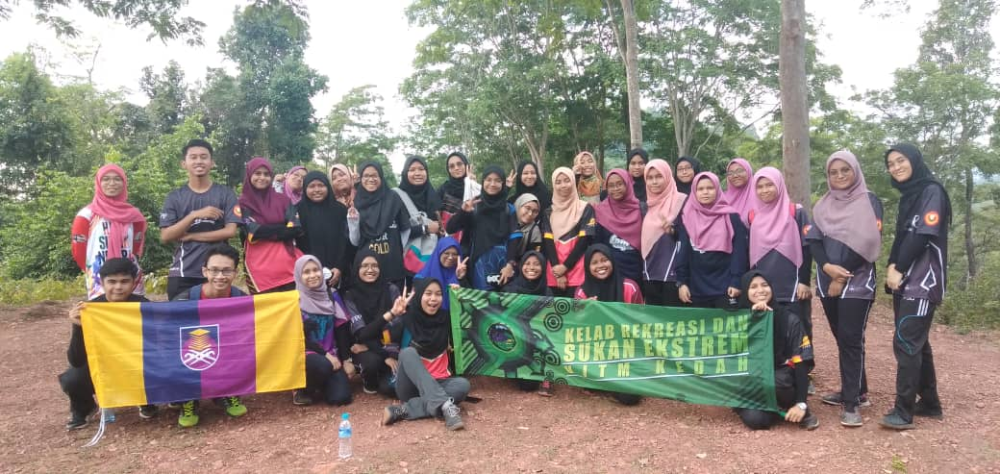
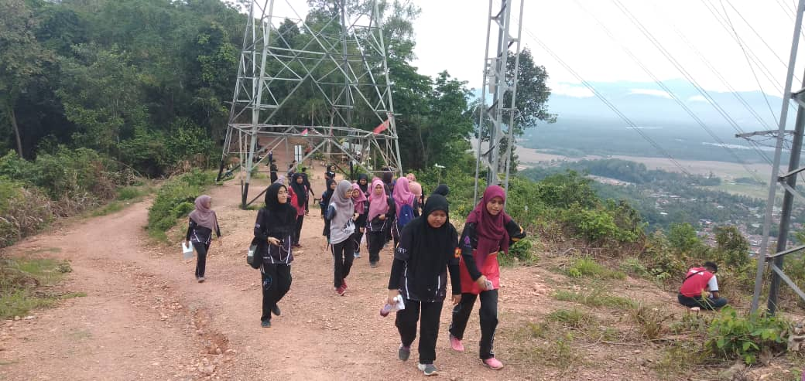
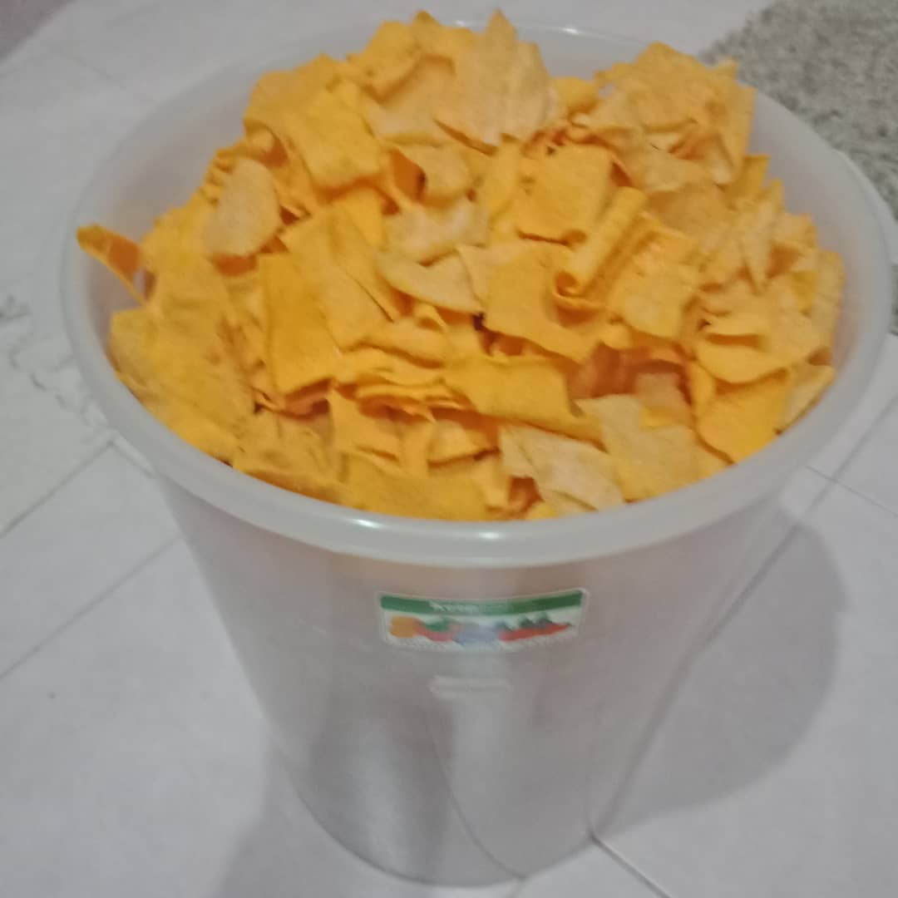
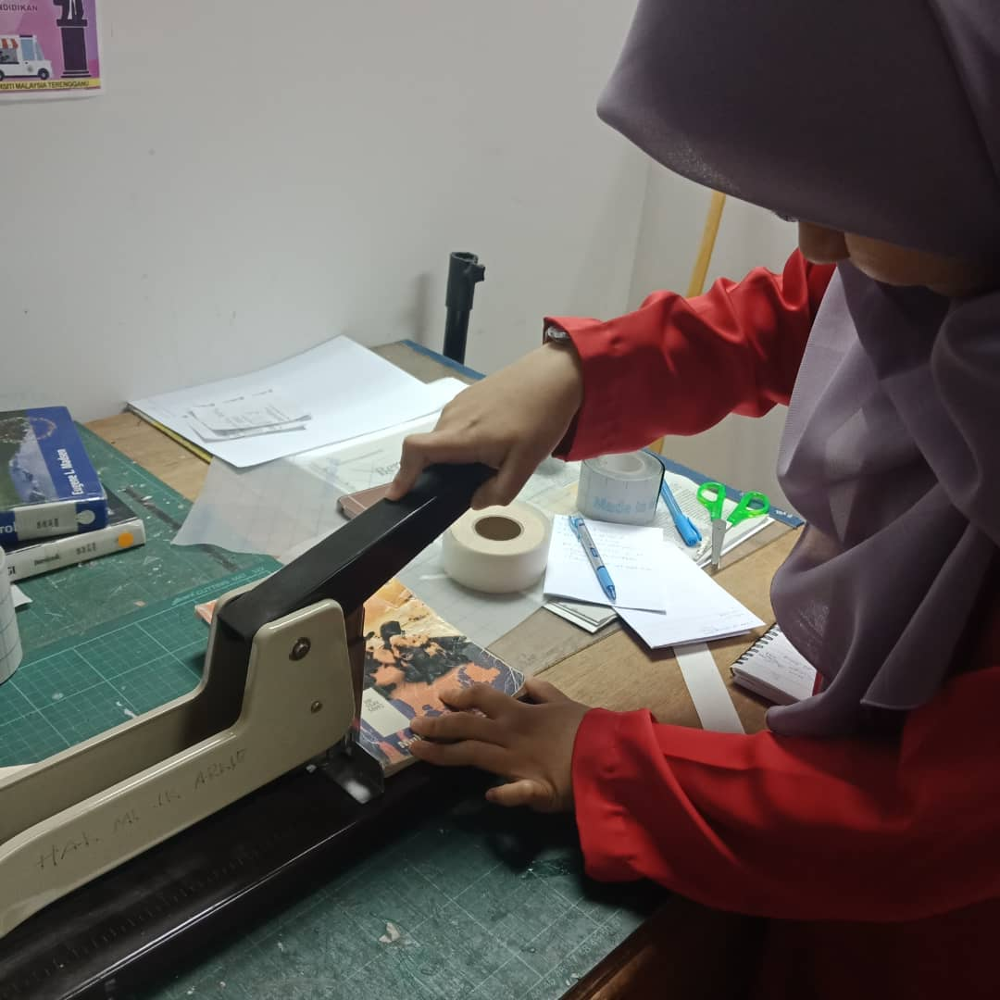
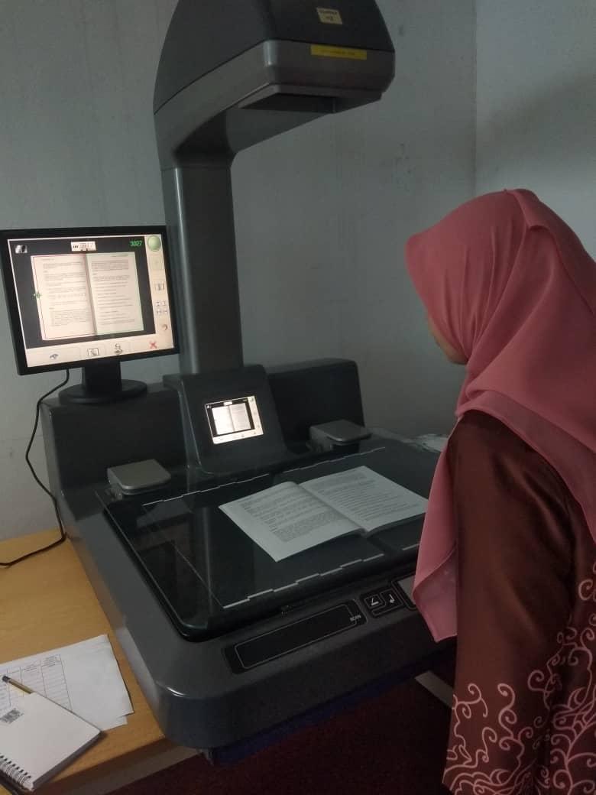
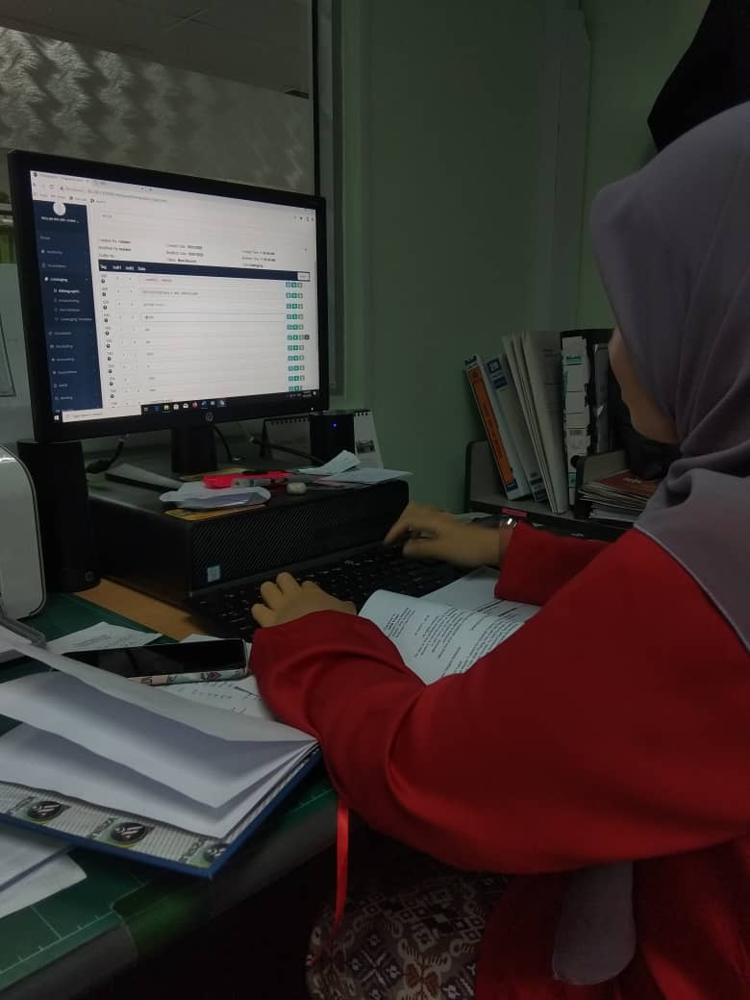
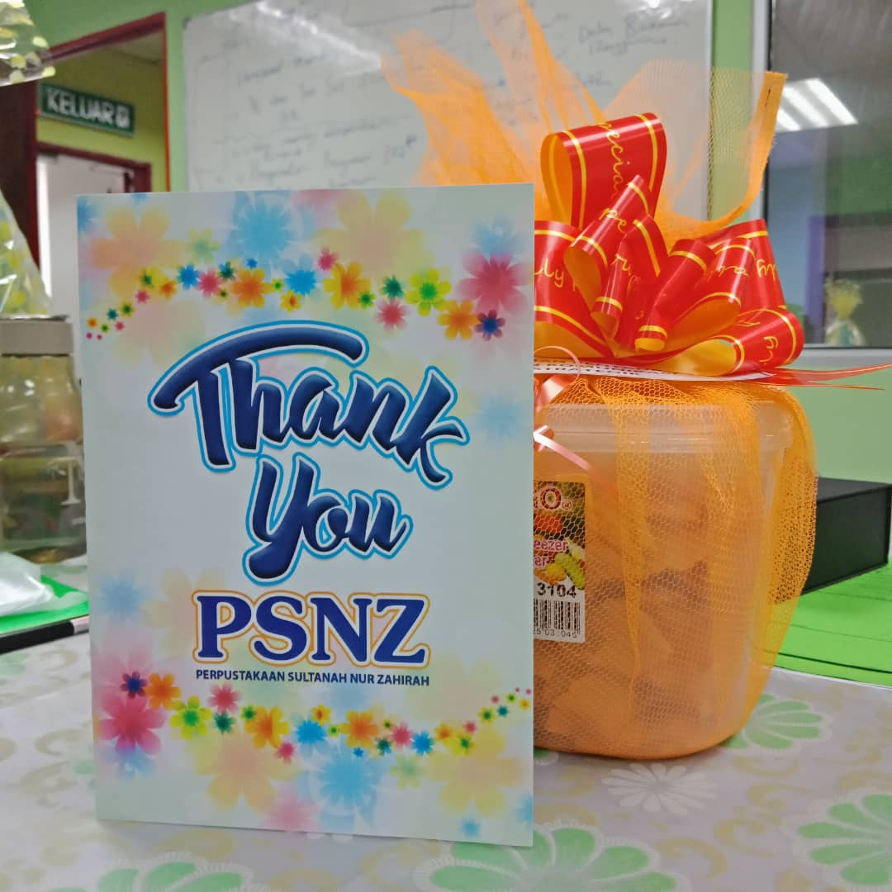

| Home | My Biodata | Family | Hobby | Experience | Education | Gallery |
|---|
Let me tell you some of my sweet experiences that have taught me and I can learn from them.There are 3 experiences that have a sweet memory while doing
so, including hiking, doing business and interning at the "Sultanah Nur Zahirah library" (PSNZ)
HIKING
I participated in a hiking activity organized by the Kedah Uitm Recreational and Sports Club. We were told to gather at the bus depot as early
as 6.45am. At 7.00 am, the bus arrived to take us to Bukit Semarak. My friends and I agreed to wear the same hijab colour of pink. We wear the same hijab
because it is easy to get to know each other.
Arriving there, we and the club members had to walk to Bukit Merak as the bus was not allowed to reach the starting point. The journey we took
was a long 20 minutes because it was a long way off. When we arrived, we were told to warm up and one of the club's leaders led the warming up.

When all is ready, the climbing activity begins. All involved need to take care of each other and take care of each other. If there is one or
more tired people, all need to stop for a moment's rest. After 30 minutes, we reached the top of the hill and were allowed to do private activities such as taking pictures and looking at
the view from above. After that, we were called to take a picture together for a memorial.


After enjoying the beauty of the hill, it was time for us to descend. To me, descending the hill is more challenging than the climb because its
steep, slippery surface makes it easy to slide. We returned from a very exhausted state as it was our first hike but we were very pleased to have had the experience of hiking.

Business
My next experience was my business experience at school where SK Padang Mengkuang was my mother's school. I've been trading popia cheese for RM 1
so students can afford it. At first I wanted to try a little popia cheese recipe but after the popia cheese I made it was delicious, my mother told me to sell it at
her school for a small amount of 30 packs. At that point I was having a lot of free time because my school days were over and I agreed with my mom's plan.
After 2 weeks, my dad also sold popia cheese at his school for my mom's school reception and my mom also increased the popia cheese sale at her
school by 70 packages and my dad had 40 packages. I really enjoy the experience of doing business school at my mom's and my father's school.
Every morning I got up early, so I came up with the idea to also sell pizza bread using only gardenia bread, chilli sauce and some other ingredients
like sausages, mozzarella cheese and to bake in the oven. The pizza bread is sold for 20 pieces a day. In addition, if my school had programs such as sports day, teacher day and
entrepreneurial day I would not miss the opportunity to do business and the amount I was selling was in large quantities as it was the opportunity to take more.
On a regular day I earn RM100 a day while on a program I earn RM170 on a day. I am very excited to have the experience of the business even if I now
have free time such as sem holiday I will also take the opportunity to do business. The money I earn will save and keep for the future.

Intern
The last experience I want to tell you is that I had the opportunity to intern at the Perpustakaan Sultanah Nur Zahirah (PSNZ). All IM120 students
need to take the subject of IML290, which is Library Fieldwork and that's why I got it. I had an intern with my friend Nurul Najihah who is
also an IM120 student but we are different classes.
On the first day we reported to Puan Rozita but we were very reluctant to report where we had not adapted to the situation. Najihah and I were
assisted by a staff member at the library after telling her that I had been an intern here and today was the first day I reported to Puan Rozita
and the staff took me to the actual place to report.
After meeting with Puan Rozita, Puan Rozita explained everything I needed to do when I interned here. Actually Encik Shahrulnizam was my supervisor
who had to explain all this to me but he had given Puan Rozita the responsibility to take care of us. After being described by Puan Rozita, Puan Aini was responsible
for introducing us to other staff and bringing us a sense of community there. The next day, I have to follow the prescribed schedule which I and Najihah have to
attend each training session there.



After 6 weeks of practice, Najihah and I gave our cards and souvenirs as a thank you for accepting us for an intern there. On the last day we were at
PSNZ, the library held a farewell ceremony in honor of having completed the intern for 6 days and at the same time gave me the opportunity to say a second word and thank you.
There, I gained some experience of the actual job situation.
